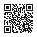

Toutes les soirées étudiantes de la ville. Une place gardée à ton nom.
Un prix étudiant à l'entrée.

Scanne. C'est gratuit.
studentlink.fr
Clermont-FerrandGratuit18 ans et +
StudentLink
Fin du mois
Sortir moins cher,c'est sortir plus souvent.
Les bars et les clubs partenaires réservent un prix étudiant à ceux qui
arrivent par StudentLink, et chaque remise s'ajoute dans ton wallet.
Douze soirées, trente-huit euros que tu n'as pas payés : c'est une
sortie de plus dans le mois.
Tu réserves ta place à l'avance, elle t'attend.
Tu montres ton pass à l'entrée, sans rien avancer.
Tu vois lesquels de tes potes y vont déjà.
Scanne. C'est gratuit.
studentlink.fr
Clermont-FerrandGratuit pour les étudiants18 ans et +
StudentLink
Rentrée
Nouveau à Clermont ?Commence par ce soir.
Première année, réorientation, Erasmus : arriver dans une ville sans
connaître personne est la situation la plus courante — et la moins
bien outillée.
Des étudiants de ton école et de ta promo.
Des squads running, vélo, muscu — ou juste un verre.
Les sorties auxquelles ils vont, pour s'y greffer.